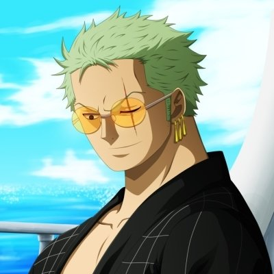
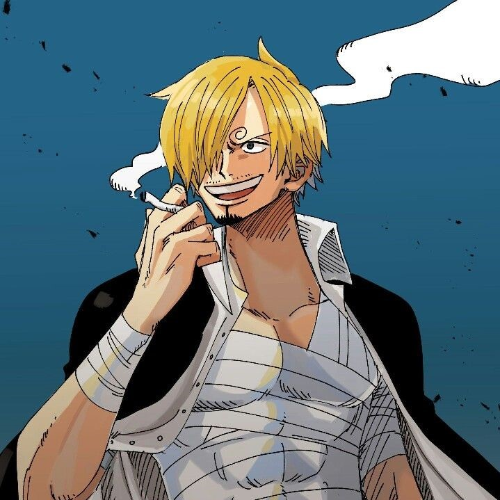

Monkey D.Luffy
Most said line:
- I will become the King of pirates
- I am hungry
- MEAAAT!!
- Do you poop?

Roronoa Zoro
Position: Right hand man of Luffy. Swords man of Straw hat pirates.
Most said line:
- Stupid cook
- I am not lost, you are lost

Position: Left hand of Luffy. Cook of Straw hat pirates.
Most said line:
Sanji
Most said line:
- Who ate all the meat
- I will save you Nami swaaan
- I will see all-blue once
- What did you said moss head(pointing towards Zoro)